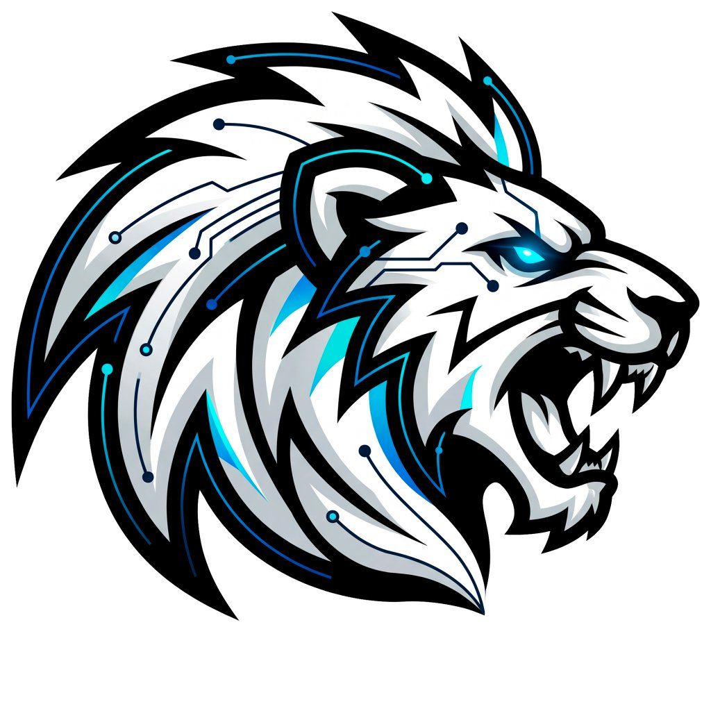

DOCKUSUn monitor flotante translúcido para Windows diseñado con estética Aero Glass moderna, partículas de luz vivas y acople magnético a las esquinas.
Tanto si programas, escribes, investigas o trabajas con modelos de lenguaje, Dockus te da control total sobre tu consumo y cuotas en tiempo real.
Conexión directa mediante Connect-RPC al Language Server local para consultar cuotas exactas de la ventana de 5 horas y del ciclo semanal de 7 días.
Vidrio acrílico translúcido con desenfoque DWM nativo, bisel especular superior y micropartículas estelares que flotan suavemente con un consumo de CPU ultra bajo (<0.5%).
Arrastra la barra y suéltala en cualquier esquina: se imanta al ras de la barra de tareas de Windows sin márgenes molestos ni sombras cuadradas.
Conoce exactamente cuántas horas y minutos restan para el reinicio de tu capacidad móvil o semanal de cada modelo sin textos genéricos.
Expande el panel para revisar tokens de entrada, salida, consumo de caché y tasa de aciertos de tus conversaciones y sesiones activas.
100% local, sin telemetría ni servidores intermedios. Licencia GNU GPLv3 para que la comunidad pueda usarlo y mejorarlo con total libertad.
No requiere instalación compleja. Es completamente portable.
Descarga la última versión empaquetada lista para Windows 10/11 x64.
Dockus-v1.0.0-win-x64.zip
Descomprime la carpeta en cualquier directorio de tu preferencia (ej. en tus Documentos o Programas).
Haz doble clic en Iniciar-Dockus.bat o directamente en Dockus.exe.
.\publish\Dockus.exe